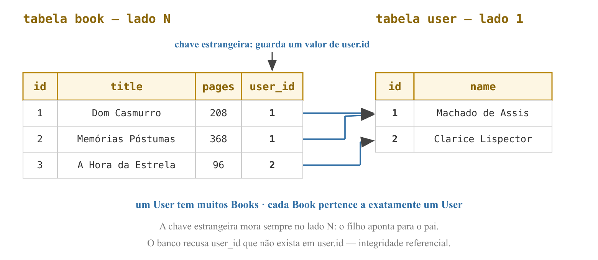
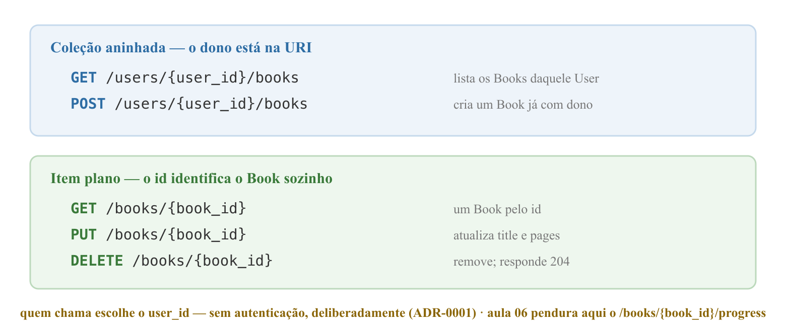

Programação Avançada — Aula 05
Universidade Unirios
create_all, POST /signup com 201 e 409;Hoje a promessa se cumpre: o Book se muda para o banco — e ganha dono.
ForeignKey e relationship;user_id na URL (ADR-0001)."Book: livro cadastrado por um User (...) pertence exclusivamente ao User que o cadastrou."
name vira title, e o cadastro passa a exigir pages — sem o total de páginas, a porcentagem de leitura da aula 06 não existe.CONTEXT.md — glossário do projeto Reading Tracker
CODD, E. F. — A Relational Model of Data for Large Shared Data Banks, CACM, 1970
CHEN, P. — The Entity-Relationship Model, ACM TODS, 1976

CHEN, P. — The Entity-Relationship Model, ACM TODS, 1976 · DATE, C. J. — An Introduction to Database Systems, 8ª ed., 2003
Chave estrangeira: coluna (ou conjunto de colunas) cujos valores devem ser, obrigatoriamente, valores da chave primária da tabela referenciada.
book.user_id só aceita valores que existam em user.id;DATE, C. J. — An Introduction to Database Systems, 8ª ed., 2003
UNIQUE do e-mail na aula 04;user_id inexistente falha;RESTRICT (recusar);ON DELETE CASCADE (o pai leva os filhos), ON DELETE SET NULL — menção, não usaremos.DATE, C. J. — An Introduction to Database Systems, 8ª ed., 2003
CREATE TABLE book (
id INT AUTO_INCREMENT PRIMARY KEY,
title VARCHAR(200) NOT NULL,
pages INT NOT NULL,
user_id INT NOT NULL,
created_at DATETIME DEFAULT CURRENT_TIMESTAMP,
FOREIGN KEY (user_id) REFERENCES user(id)
);
Como na aula 04: ninguém digita este CREATE TABLE — o ORM o escreve por nós.
class Book(Base):
__tablename__ = "book"
id: Mapped[int] = mapped_column(primary_key=True)
title: Mapped[str] = mapped_column(String(200))
pages: Mapped[int]
user_id: Mapped[int] = mapped_column(ForeignKey("user.id"))
created_at: Mapped[datetime] = mapped_column(server_default=func.now())
user: Mapped["User"] = relationship(back_populates="books")
pages: Mapped[int] — sem mapped_column(): nada a configurar, a anotação basta;ForeignKey("user.id") — a string é "tabela.coluna": a linha FOREIGN KEY ... REFERENCES do quadro;<tabela>_id, datetime com _at.
class User(Base):
# ...colunas da aula 04...
books: Mapped[list["Book"]] = relationship(back_populates="user")
class Book(Base):
# ...colunas...
user: Mapped["User"] = relationship(back_populates="books")
relationship não vira coluna — existe só no mundo Python;user.books é uma lista de Book; book.user é o dono;back_populates: os dois atributos são a mesma relação, vista de cada lado;relationship, na língua dos objetos — o ORM traduz.Documentação oficial do SQLAlchemy — docs.sqlalchemy.org
uvicorn main:app --reload
main.py — o create_all da aula 04 já varre o metadata da Base;user já existe e fica intocada; o CREATE TABLE book (...) sai completo, com a FOREIGN KEY;SHOW TABLES; e SHOW CREATE TABLE book; — o DDL gerado, a constraint nomeada (book_ibfk_1) e o ENGINE=InnoDB.
INSERT INTO book (title, pages, user_id)
VALUES ('Dom Casmurro', 208, 999);
-- ERROR 1452: a foreign key constraint fails
INSERT INTO book (title, pages, user_id)
VALUES ('Dom Casmurro', 208, 1); -- ok
DELETE FROM user WHERE id = 1;
-- ERROR 1451: a foreign key constraint fails
if;
/users/1/books lê-se "os books do user 1";/books/{book_id} — o id identifica sozinho; sempre book_id (ADR-0002). A aula 06 pendura aqui o /progress;/api se aposenta com a lista em memória — /signup (aula 04) inaugurou o padrão definitivo.RFC 3986 — Uniform Resource Identifier (URI): Generic Syntax, IETF, 2005
main.py: a lista books, o contador next_book_id, as cinco rotas /api/books e os schemas antigos de Book;create_all, app, schemas de User, get_db, /health, /signup;--reload denuncia o que escapar — o traceback é o guia da demolição.
class BookCreate(BaseModel):
title: str
pages: int
class BookRead(BaseModel):
model_config = ConfigDict(from_attributes=True)
id: int
title: str
pages: int
user_id: int
title e pages — os campos do domínio; o total de páginas alimenta a porcentagem da aula 06;BookRead segue a nomenclatura de UserRead — e evita colidir com models.Book;user_id na saída: a posse aparece na resposta.
@app.post("/users/{user_id}/books", response_model=BookRead,
status_code=201)
def create_book(user_id: int, book: BookCreate,
db: Session = Depends(get_db)):
new_book = models.Book(title=book.title, pages=book.pages,
user_id=user_id)
db.add(new_book)
db.commit()
db.refresh(new_book)
return new_book
add/commit/refresh do signup — a novidade é o user_id vindo do path, direto para a FK;POST /users/1/books → 201; POST /users/999/books → 500: o ERROR 1452, agora pela API.
user = db.get(models.User, user_id)
if user is None:
raise HTTPException(status_code=404, detail="User not found")
db.get(Model, pk) — busca por chave primária, o caminho curto quando se tem o id (select().where() segue para as demais colunas);UNIQUE e o if do e-mail.
@app.get("/users/{user_id}/books", response_model=list[BookRead])
def list_books(user_id: int, db: Session = Depends(get_db)):
user = db.get(models.User, user_id)
if user is None:
raise HTTPException(status_code=404, detail="User not found")
return user.books
user.books — nenhuma consulta escrita à mão: ao acessar o atributo, o SQLAlchemy emite o SELECT (lazy loading — confira no echo);if, /users/999/books devolveria 200 com [] — uma mentira: "user sem livros" e "user inexistente" ficariam indistinguíveis;
@app.put("/books/{book_id}", response_model=BookRead)
def update_book(book_id: int, book: BookCreate,
db: Session = Depends(get_db)):
stored_book = db.get(models.Book, book_id)
if stored_book is None:
raise HTTPException(status_code=404, detail="Book not found")
stored_book.title = book.title
stored_book.pages = book.pages
db.commit()
db.refresh(stored_book)
return stored_book
db.update(): o objeto veio da sessão — mudar os atributos basta;commit emite o UPDATE sozinho — confira no echo.FOWLER, M. — Patterns of Enterprise Application Architecture, 2002
@app.get("/books/{book_id}", response_model=BookRead)
def read_book(book_id: int, db: Session = Depends(get_db)):
book = db.get(models.Book, book_id)
if book is None:
raise HTTPException(status_code=404, detail="Book not found")
return book
@app.delete("/books/{book_id}", status_code=204)
def delete_book(book_id: int, db: Session = Depends(get_db)):
book = db.get(models.Book, book_id)
if book is None:
raise HTTPException(status_code=404, detail="Book not found")
db.delete(book)
db.commit()
db.delete anota a remoção; o commit a executa;GET /users/1/books: os livros continuam lá;/docs exibe exatamente o mapa REST do quadro.?name=hobbit filtrava a lista em memória; a busca se perdeu na demolição;title: str = "";user.books; senão, select(models.Book) com duas condições no where: o dono e models.Book.title.contains(title);db.scalars(...).all() — o plural do db.scalar da aula 04;?title=dom e confira no echo: que operador SQL apareceu?ForeignKey declara a coluna; relationship/back_populates dão à relação a forma de objetos (user.books, lazy loading);db.get por chave primária, UPDATE emitido pelo Unit of Work;Um Book cadastrado ainda é uma foto parada — 208 páginas, e daí? A pergunta que o projeto existe para responder: "em que página você está?"
POST /books/{book_id}/progress, no endereço plano que deixamos pronto hoje;